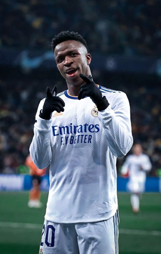
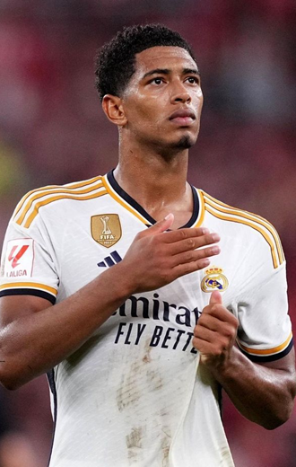
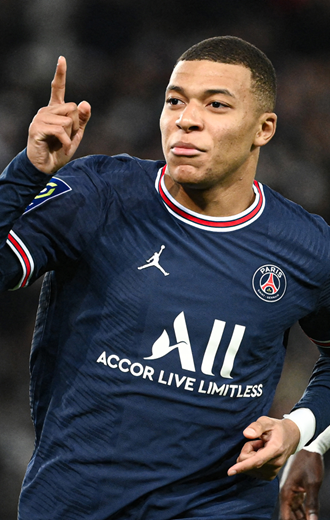

-
Vinicius Jr
Descrição
Vinicius José Paixão de Oliveira Junior é um futebolista brasileiro que atua como ponta-esquerda. Atualmente joga pelo Real Madrid e pela Seleção Brasileira. Em 2017, o atacante entrou para a história do futebol mundial. Com apenas 16 anos, foi vendido pelo Flamengo ao Real Madrid por 45 milhões de euros.
-
Jude Bellingham
Descrição
Jude Victor William Bellingham é um futebolista inglês que atua como meio campista. Atualmente joga pelo Real Madrid e pela Seleção Inglesa. Em 2023, o atacante entrou para a história do futebol mundial. Com apenas 19 anos, foi vendido pelo Borussia Dortmund ao Real Madrid por 133,9 milhões de euros.
-
Kyliam Mbappe
Descrição
Kylian Mbappé Lottin é um futebolista francês que atua como atacante. Atualmente joga pelo Real Madrid e pela Seleção Francesa. Considerado um dos melhores jogadores da última década, ele é conhecido pelo seus dribles e sua velocidade explosiva. Mbappé começou sua carreira no Monaco, em 2015, com apenas 16 anos
-
Harry Kane
Descrição
Harry Edward Kane é um futebolista inglês que atua como centroavante. Atualmente joga no Bayern de Munique. O jogador marcou época no Tottenham, tendo ficado 19 anos, contando com as categorias de base no time.